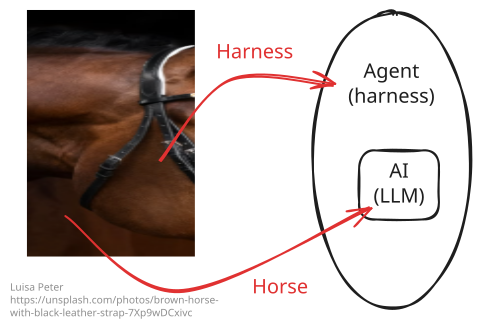
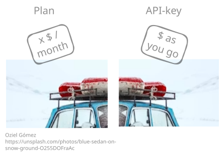

TL;DR - npm install -g @anthropic/claude-code → claude login → claude. ESC to stop, ctrl+c twice to exit, /usage to check spend. /clear or /new to clear context. Pricing: use Plans for personal use, API keys for products.
If you already have Claude Code (or similar) installed and running, you can skip to Post 1.
A coding agent is an AI that doesn't just answer questions - it takes actions in your codebase. It reads files, writes code, runs commands, and iterates until a task is done. Think of it less like a chatbot and more like a junior intern sitting at your terminal.
In practice it is an LLM model (AI) + a harness (regular code) to help split tasks, take actions into the "thinking" power of LLMs.
This series focuses on Claude Code, Anthropic's CLI agent. Other options exist (Cursor, Copilot, Opencode, Aider), but Claude Code is what we'll use throughout.

Pricing changes - check the Anthropic pricing page for current numbers.
Note there are two billing methods. Plans and api-keys. Plans get limits that reset periodically. You pay a monthly fee - even if you never use it. api-keys pays based on token usage.
See usage by running the /usage command or visit x page.
For private or corporate individual use I would recommend plans with predictable spend, and only use api-keys in product or project setting.

Not familiar with the CLI? Download the Claude Code desktop app - it's the easiest way to get started.
npm install -g @anthropic-ai/claude-codeclaudeThat's the entry point.
It is similar to a chat, and you can write any request like "write me a haiku poem about trees" or "make me a python function to convert Celsius to Fahrenheit"
You control the agent. It has reading access to the repo you started it in, but asks you for all changes where it will run commands.
/usage that will show you current usage./clear or /new to reset context window.Next post covers the core workflow: how to reference files, write prompts as files, and get output as files. That's where the productivity jump happens.
Download from the official VS Code page - pick the installer for your OS (Windows, macOS, or Linux) and run it. It's a standard install, nothing unusual.
Getting the terminal open in VS Code
Claude Code runs in a terminal. VS Code has one built in:
Ctrl+` (Windows/Linux) or ⌃` (Mac) to toggle itThe terminal opens at the bottom of the editor, already pointed at your project folder. That's where you run claude.
npm comes bundled with Node.js - install Node and you get npm automatically.
Download the LTS version from nodejs.org/en/download. Run the installer, then verify in your terminal:
node -v
npm -v
Both should print a version number. After that, npm install -g @anthropic-ai/claude-code will work.